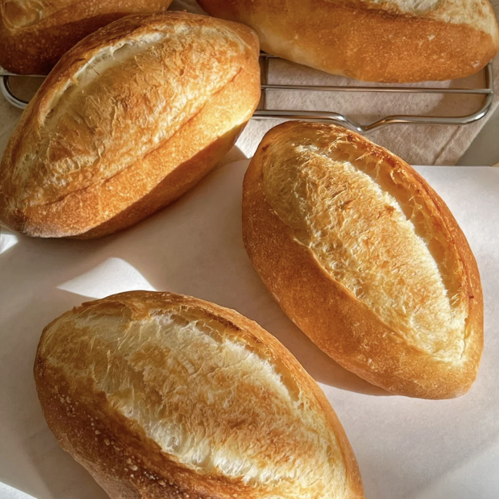

Tartine Bread
A deliciously crusty sourdough bread that requires minimal effort to make.
Nutritional Information
| Nutrient | Amount per Serving |
|---|---|
| Calories | 250 kcal |
| Carbohydrates | 50g |
| Protein | 7g |
| Fat | 1g |
| Fiber | 3g |
| Sodium | 250mg |
| Sugar | 1g |
| Calcium | 20mg |
| Iron | 2mg |
| Potassium | 120mg |
| Cholesterol | 0mg |
* Daily values are based on a 2000 calorie diet. Nutritional values may vary based on ingredients and preparation.